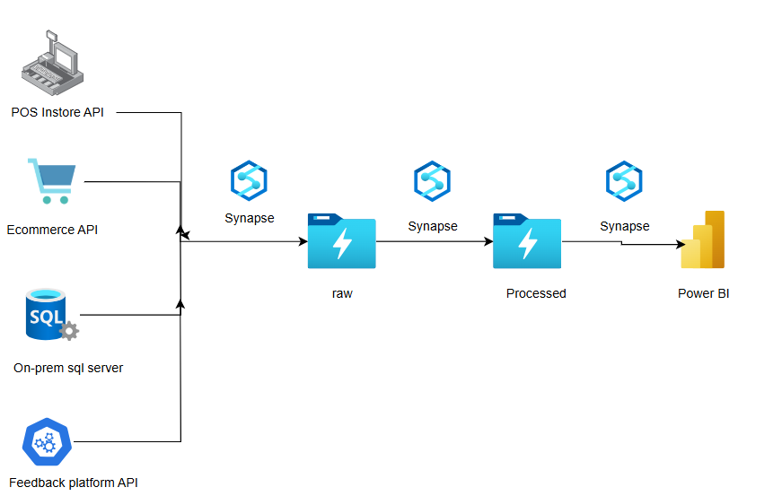
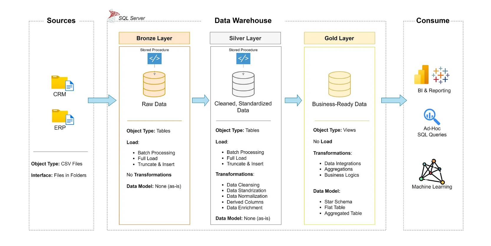
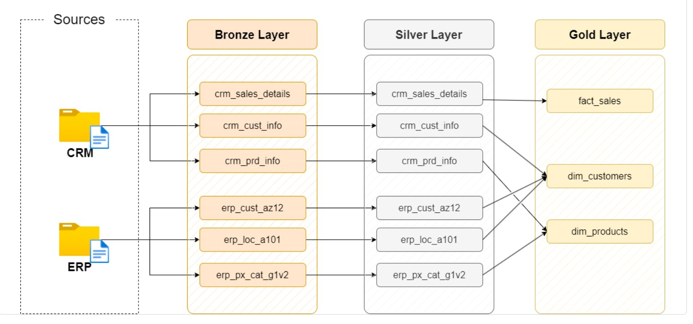
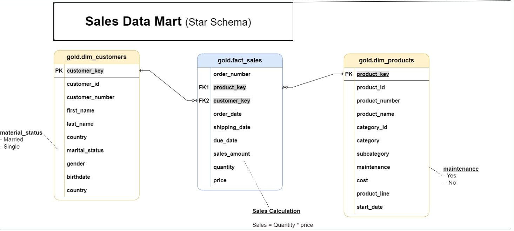
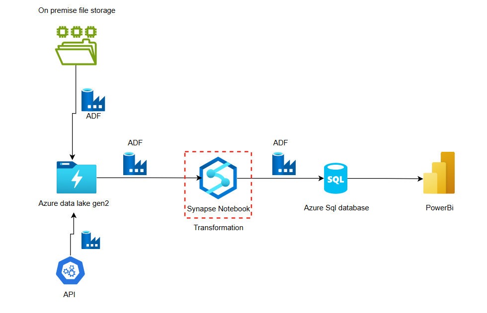
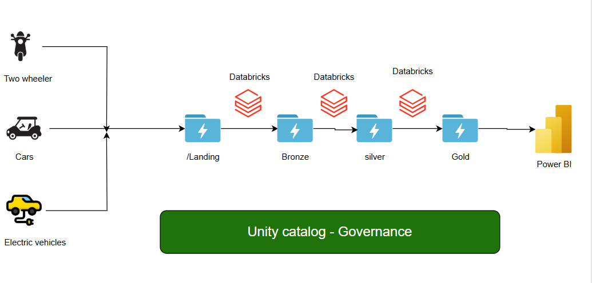
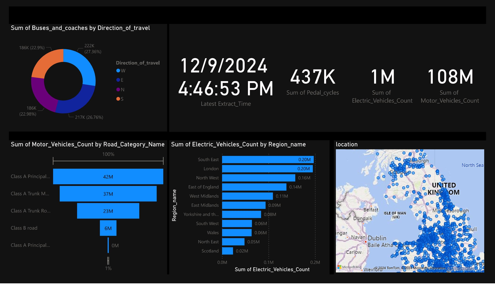

Developed a centralized retail data platform using Azure Synapse Analytics and Power BI to integrate data from POS, online sales, inventory, and feedback sources. Enabled real-time analytics with serverless SQL pools for cost-effective querying and scalable performance. Delivered dynamic Power BI dashboards for insights into sales trends, inventory levels, and customer satisfaction.
Click Here


A full-scale data warehousing and analytics solution built for a mid-sized manufacturing firm. This project demonstrates how raw ERP and CRM data can be transformed into meaningful insights using industry best practices. Leveraging a Medallion Architecture (Bronze, Silver, Gold), the system was developed in SQL Server and integrated with Power BI for dynamic dashboards and reporting. Ideal for clients seeking streamlined data pipelines, actionable insights, and scalable BI solutions.
Click Here
We implemented a modern data pipeline for an OTT media company to unify their on-premises movie metadata and API-based user data into a centralized Azure cloud platform. The solution leveraged Azure Data Factory, Data Lake Storage Gen2, Synapse Analytics, and Power BI to automate daily data ingestion, transformation, and reporting. This enabled real-time insights into content performance and user engagement, powering personalized recommendations and executive dashboards.
Click Here

Built a real-time traffic intelligence platform using Azure Data Factory, Databricks, and Power BI, with data governance enforced via Unity Catalog. Designed an end-to-end ETL pipeline to ingest and transform live traffic data from AI-enabled cameras, enabling city planners to monitor vehicle trends, road usage, and EV adoption. Delivered actionable insights through interactive dashboards and ensured enterprise-grade data security and auditability.
Click Here